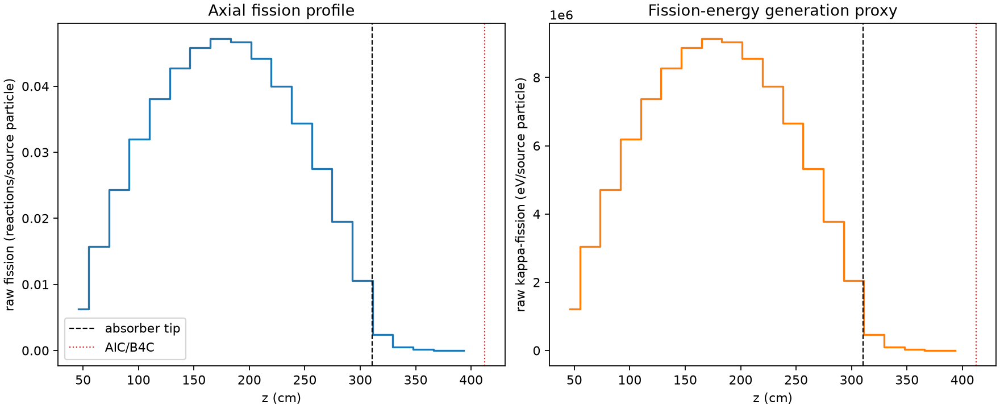
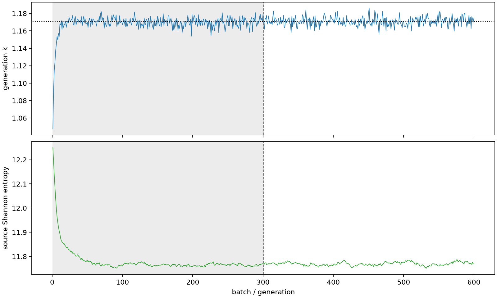

| field | value |
|---|---|
| experiment | V2-STAGE_256_OGRENCI_04-0009 |
| k | 1.170750724838549 |
| MC standard error | 0.00019157056655572989 |
| seconds | 1019.8782320109967 |
| acceptance | not_assessed |
| convergence | review_required |
Completed is output integrity only; physical and statistical review required. Zero tallies do not prove zero production or zero uncertainty.
| diagnostic | value |
|---|---|
| geometric fuel voxels | 5280 |
| zero fission tally voxels | 0 |
| low signal fuel voxels | 520 |
| low signal fission share | 8.249653543491441e-05 |
| low signal kappa share | 8.252989422392289e-05 |
| important fission share | 0.950050970295553 |
| previous filter included | 4760 |
| duration estimate s | 1562.5173488400023 |
| actual minus estimate s | -542.6391168290056 |
| fission relative MC error | statistics |
|---|---|
| all_geometric_fuel | {"voxels": 5280, "positive_mean_voxels": 5280, "zero_mean_voxels": 0, "undefined_relative_error_voxels": 0, "median": 0.010121133033804575, "p95": 0.34372128804550967, "maximum": 0.9095760488807437} |
| low_signal | {"voxels": 520, "positive_mean_voxels": 520, "zero_mean_voxels": 0, "undefined_relative_error_voxels": 0, "median": 0.3549989354432369, "p95": 0.6266988297173105, "maximum": 0.9095760488807437} |
| important_95pct | {"voxels": 3362, "positive_mean_voxels": 3362, "zero_mean_voxels": 0, "undefined_relative_error_voxels": 0, "median": 0.0084391610399644, "p95": 0.01250536184557044, "maximum": 0.01451621880195705} |
| outside_previous_filter | {"voxels": 520, "positive_mean_voxels": 520, "zero_mean_voxels": 0, "undefined_relative_error_voxels": 0, "median": 0.3549989354432369, "p95": 0.6266988297173105, "maximum": 0.9095760488807437} |
| kappa_fission relative MC error | statistics |
|---|---|
| all_geometric_fuel | {"voxels": 5280, "positive_mean_voxels": 5280, "zero_mean_voxels": 0, "undefined_relative_error_voxels": 0, "median": 0.010109950875015084, "p95": 0.34330976145776715, "maximum": 0.9086194504763622} |
| low_signal | {"voxels": 520, "positive_mean_voxels": 520, "zero_mean_voxels": 0, "undefined_relative_error_voxels": 0, "median": 0.35453522235023555, "p95": 0.6254087072931173, "maximum": 0.9086194504763622} |
| important_95pct | {"voxels": 3362, "positive_mean_voxels": 3362, "zero_mean_voxels": 0, "undefined_relative_error_voxels": 0, "median": 0.008428947767305902, "p95": 0.012491953582473783, "maximum": 0.014498868789578111} |
| outside_previous_filter | {"voxels": 520, "positive_mean_voxels": 520, "zero_mean_voxels": 0, "undefined_relative_error_voxels": 0, "median": 0.35453522235023555, "p95": 0.6254087072931173, "maximum": 0.9086194504763622} |
| axial bin | fission share | kappa-fission share |
|---|---|---|
| 1 | 0.013043668157097442 | 0.013044340223006596 |
| 2 | 0.03297347484594265 | 0.032973382298387054 |
| 3 | 0.050834543773960836 | 0.050834399635745396 |
| 4 | 0.06682750901373283 | 0.0668273503774242 |
| 5 | 0.07965824238990085 | 0.07965813232635045 |
| 6 | 0.0893659911076124 | 0.0893656236458971 |
| 7 | 0.0958845835768452 | 0.095883989107427 |
| 8 | 0.09867836028763902 | 0.09867826039933543 |
| 9 | 0.09772780498536193 | 0.09772748417714015 |
| 10 | 0.09248947252932302 | 0.09248912269517523 |
| 11 | 0.08368156070812582 | 0.08368129706765086 |
| 12 | 0.07193275271619 | 0.07193257064502137 |
| 13 | 0.057550669410335764 | 0.057550310769857047 |
| 14 | 0.04081066640962402 | 0.04081053104868894 |
| 15 | 0.02209496287060994 | 0.022095195360907774 |
| 16 | 0.004964044826886289 | 0.004965740826412827 |
| 17 | 0.0011266939140863604 | 0.0011271303663581542 |
| 18 | 0.00027123690073940266 | 0.00027134322215312403 |
| 19 | 6.978119295817433e-05 | 6.980683945890488e-05 |
| 20 | 1.3980383028107798e-05 | 1.3988967602136812e-05 |
Histories include the inactive-to-active transition at batch 300. kappa-fission approximates fission energy production, not total heat deposition.

